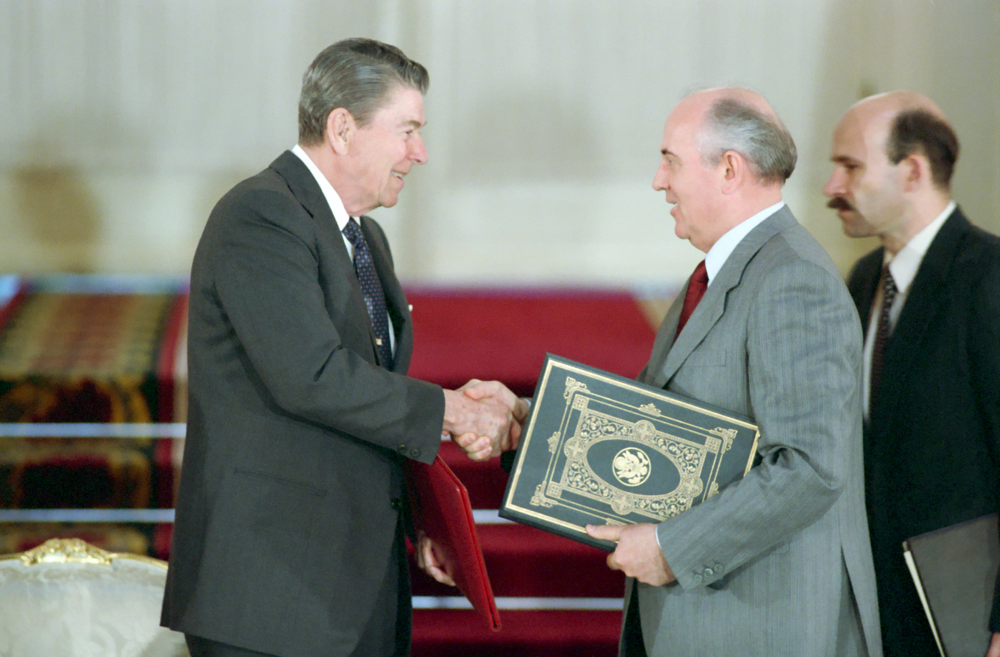

U.S. FOREIGN POLICY / WEEK 12
Human rights and the end of the Cold War
- 1977–1989
- Dr. Murat Toman
U.S. FOREIGN POLICY / WEEK 12
The main idea
- Carter and Reagan combined values, security concerns, pressure, and negotiation in different ways. The end of the Cold War also depended on choices and changes outside the United States.
- Military pressure, diplomacy, domestic reform, and political change all belong in explanations of the Cold War’s ending. Gorbachev and other actors made consequential choices. A strong explanation identifies how a proposed cause worked and what evidence supports it. It should also address plausible alternatives.
U.S. FOREIGN POLICY / WEEK 12
Where this week fits in history
| When | Selected event |
|---|---|
| 1972 | Shanghai Communiqué |
| 1987 | INF Treaty |
| 1991 | Gulf War and dissolution of the Soviet Union |
U.S. FOREIGN POLICY / WEEK 12
History through a source

- The 1988 INF ratification ceremony shows that the United States and Soviet Union could negotiate limits on weapons while remaining rivals. The treaty text and records of implementation are needed to assess the agreement’s actual obligations and effects.
- A photograph records a meeting and a public gesture. It cannot by itself show the terms agreed or the intentions of each participant.
U.S. FOREIGN POLICY / WEEK 12
Key words explained
- Human rights: Claims that people have basic rights regardless of nationality or government.
- Arms control: Agreements intended to limit or manage weapons and related risks.
U.S. FOREIGN POLICY / WEEK 12
Key words explained
- Verification: Checking whether parties are carrying out an agreement.
- Causal explanation: An account of how and why one factor helped produce an outcome.
U.S. FOREIGN POLICY / WEEK 12
Human rights and security were intertwined
- Carter emphasized human rights, while regional crises and security concerns still shaped policy. Reagan emphasized confrontation and military strength while also negotiating.
- Treating one presidency as purely idealistic and another as purely strategic hides these combinations. The balance changed across issues and over time.
U.S. FOREIGN POLICY / WEEK 12
Domestic groups pushed policy in different directions
- Conservative movements, defense interests, human-rights advocates, and opponents of nuclear weapons sought to influence policy. Their competing priorities affected what leaders considered possible or desirable.
- Domestic politics could support confrontation, negotiation, or both. Public debate remained part of foreign policy.
U.S. FOREIGN POLICY / WEEK 12
Regional actors helped shape outcomes
- The Middle East and other regions had conflicts and interests that cannot be reduced to superpower competition. The Camp David process depended on choices by regional leaders as well as American diplomacy.
- An ally’s aims were not automatically identical to U.S. aims. Local histories matter when explaining an agreement or crisis.
U.S. FOREIGN POLICY / WEEK 12
A speech and a treaty provide different evidence
- Reagan’s Berlin speech reveals public language, priorities, and the audience he addressed. The INF Treaty records negotiated obligations concerning specified missiles and procedures.
- A speech cannot by itself prove that it caused a later event. A treaty’s promises must also be compared with evidence of implementation.
U.S. FOREIGN POLICY / WEEK 12
Several changes contributed to the ending
- Military pressure, diplomacy, domestic reform, and political change all belong in explanations of the Cold War’s ending. Gorbachev and other actors made consequential choices.
- A strong explanation identifies how a proposed cause worked and what evidence supports it. It should also address plausible alternatives.
U.S. FOREIGN POLICY / WEEK 12
Politics at home and abroad
- At home: Political movements and disputes over defense, rights, and nuclear risks influenced policy.
- Abroad: The United States combined rivalry, regional diplomacy, and negotiations with the Soviet Union.
- The connection: domestic support and resources affect what leaders can promise abroad. International events can change domestic priorities.
U.S. FOREIGN POLICY / WEEK 12
How power worked
| Form of influence | How it operated in this week |
|---|---|
| Hard power | Military spending, deterrence, and support for armed partners applied pressure. |
| Soft power | Claims about freedom and rights sought support, while their credibility depended on conduct. |
- A speech signals preferences; causal claims about outcomes require evidence beyond temporal sequence.
U.S. FOREIGN POLICY / WEEK 12
A worked explanation
- Does the fact that one event happened before another prove it caused it?
- No. Sequence is not enough. A causal argument needs a mechanism, supporting evidence, and consideration of other possible explanations.
- Why this matters: Military pressure, diplomacy, domestic reform, and political change all belong in explanations of the Cold War’s ending. Gorbachev and other actors made consequential choices. A strong explanation identifies how a proposed cause worked and what evidence supports it. It should also address plausible alternatives.
U.S. FOREIGN POLICY / WEEK 12
Practice with the documents
- Find one claim in Reagan’s Berlin speech.
- Find one obligation in the INF Treaty.
- Explain why different kinds of evidence are needed to assess a claim’s influence and a treaty’s implementation.
U.S. FOREIGN POLICY / WEEK 12
How to support an answer
- A claim is what you argue. Evidence is a specific passage, event, or finding that supports it. Explain the connection between them.
- Example structure: “The document claims ____. This suggests ____. It cannot by itself show ____.”
- A speech can establish what a speaker said. Evidence of actions and consequences is needed to judge whether the policy worked.
U.S. FOREIGN POLICY / WEEK 12
What to remember
- Carter and Reagan both combined values, security interests, and negotiation.
- Regional conflicts had local causes and actors beyond superpower rivalry.
- A speech and a treaty support different kinds of historical claims.
- The Cold War’s ending requires multicausal explanation rather than a single victory narrative.
U.S. FOREIGN POLICY / WEEK 12
Reading guide
- Reagan’s Berlin Address: archival recording (1987) A document from the period. Use it to identify what officials claimed or authorized, then check other evidence for the consequences. External source page; access may vary.
- INF Treaty (1987) A document from the period. Use it to identify what officials claimed or authorized, then check other evidence for the consequences. External source page; access may vary.
Reagan’s Berlin Address: archival recording (1987) — External source page; access may vary.
INF Treaty (1987) — External source page; access may vary.
U.S. FOREIGN POLICY / WEEK 12
Reading guide
- U.S.–Soviet Relations, 1981–1991 A retired historical background essay. Use it for context, and compare its account with scholarship and other perspectives. External source page; access may vary.
- From Colony to Superpower: U.S. Foreign Relations since 1776 A scholarly narrative companion for historical periods. Select the relevant period; no unverified page assignments are supplied. Publisher record; full text may require institutional access.
U.S.–Soviet Relations, 1981–1991 — External source page; access may vary.
Office of the Historian Milestones: retired series, retained online for historical reference; not a current-policy source.
From Colony to Superpower: U.S. Foreign Relations since 1776 — Publisher record; full text may require institutional access.
U.S. FOREIGN POLICY / WEEK 12
Reading guide
- The Global Cold War: Third World Interventions and the Making of Our Times Adds a global and intervention-centered perspective to Cold War analysis. Publisher record; full text may require institutional access.
The Global Cold War: Third World Interventions and the Making of Our Times — Publisher record; full text may require institutional access.
U.S. FOREIGN POLICY / WEEK 12
Video and audio guide
- U.S. President Ronald Reagan Delivers “Mr. Gorbachev, Tear Down This Wall” Speech Analyze presidential rhetoric as one element of pressure and negotiation in the late Cold War.
- Ep. 116 Engaging the Evil Empire Compare public confrontation with less visible diplomacy in the early 1980s.
U.S. President Ronald Reagan Delivers “Mr. Gorbachev, Tear Down This Wall” Speech — Free provider page; external player may require consent or be region-dependent
Primary-source video dated June 12, 1987, within the museum’s Berlin Wall timeline.
Ep. 116 Engaging the Evil Empire — Free provider page; external player may require consent or be region-dependent
November 20, 2020. Provider HTML fetched successfully (HTTP 200), with podcast metadata; full playback not tested.
U.S. FOREIGN POLICY / WEEK 12
Using the sources carefully
- Linked readings and media offer particular viewpoints. Compare them with the lesson and other evidence. Some sources require institutional access.
- Media links and descriptions were checked when the course resources were prepared. Full playback was not tested.